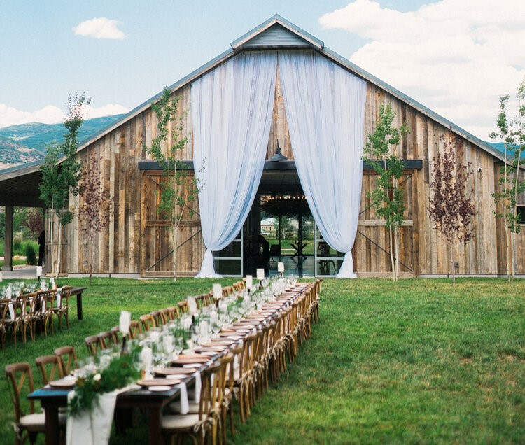

Ambition Statement
I am an ideator and an activator. My experience as a language tutor, missionary, and swim instructor have developed my creativity in planning as well as my ability to adapt on the spot. My fun-loving nature, combined with my sense of urgency, make me a natural leader and motivator. I also love teaching myself new things; I play guitar as a COVID hobby, study German and Spanish in my spare time, love learning new tricks on Adobe Illustrator, and believe I can do anything with a little help from YouTube. My experience in Experience Design has taught me how to understand customer needs and knack for ideation enables me to creatively solve problems and enhance business experiences.
Education
- Brigham Young University, BYU Marriott School of Business
Bachelor of Science, Experience Design & Management (Aug 2017 - Apr 2022) - Current GPA 3.76, ACT 33
- Specialized Topics of Study: Web Development; Event Planning; Customer Journey Mapping; Design Thinking; Project Management; Diversity, Equity, and Inclusion; Needfinding; Data Analytics
Experience
- Self-Employed
Wedding Florist in Provo, UT (Nov 2021) - Shopped for and completed bridal bouquet, 5 bridesmaids bouquets, 6 boutonnieres, 10 centerpieces, and arbor florals within $550 budget using artificial flowers
- Michelle Leo Events
Intern in Salt Lake City, UT (Jul-Sep 2021) - Assisted with set-up, catering, floral installations, strike, transportation for 5 events
- Creatively solved event issues without disrupting the guests
- Increased understanding of planning processes and vendor communication
- Mastermind Retreat with Scott Duffy
Event Volunteer in Sundance, UT (Jun 2021) - Assisted with the daily setup of a CEO networking retreat for 35 individuals
- Responsible for day-of communication with catering and maintaining venue cleanliness
- Project Read Volunteer Appreciation Event
Volunteer Event Planner in Provo, UT (Apr 2021) - Coordinated with 3 team members to research catering and gift ideas within the budget
- Presented catering and gift ideas to coordinator through a PowerPoint presentation
- Spearheaded design and purchasing of décor through budget shopping and handmaking
- Missionary Training Center
German Language Tutor in Provo, UT (May 2020 - Apr 2021) - Engaged students in one-on-one, customized language training
- Created lesson plans for various language levels, learning interests, and learning abilities
- Self-Employed
Private Swim Instructor in Albuquerque, NM (Summers 2014-2018, 2020) - Provided swim instruction to over 65 students of various age and ability
- Church of Jesus Christ of Latter-day Saints
Voluntary Representative in Baden Wuerttemberg, Germany; Bern, Switzerland; Vienna, Austria (Aug 2018 - Jan 2020) - Worked 12-hour days to achieve specific goals and develop a strong work ethic
- Held various leadership positions to guide, instruct, and train other volunteers
- Gained German fluency
- City of Albuquerque
Swim Team Head Coach, Lifeguard, and Cashier in Albuquerque, NM (Jun 2006 - Jun 2008) - Managed team affairs for a team of 150 swimmers, coached the 8- to 12-year-old age group
- Rinchem Human Resources Intern in Albuquerque, NM (Mar-Apr 2017)
- Conducted safety focus groups for over 20 groups of 10 or more employees
- Compiled and presented safety report and data-driven recommendations to management
Skills and Certifications
- Event Canvas Certified through the Event Design Collective
- Qualtrics certified
- Adobe Illustrator, Adobe InDesign
- Fluent German, some Spanish
- Database Modeling, SQL, Flowcharting, Excel Automation (VBA), Tableau (data analytics and visualization), Statistics in Excel (including prediction), Solver (optimization with Excel), Web Development (HTML CSS)
Contact Information
Email: bsbreinholt@gmail.com | Phone: (555)555-555
View my LinkedIn profile here to see additional work experiene.
 A Michelle Leo Event I assisted with in Park City, UT.